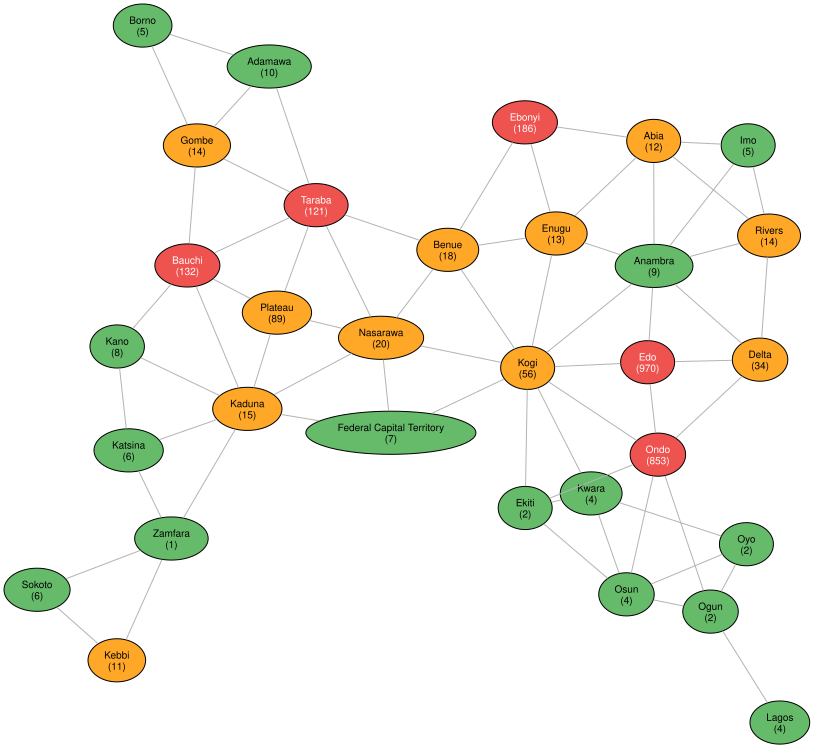

Lassa Fever Surveillance in Nigeria: A Knowledge Graph Approach
Simon Frost
Introduction
Lassa fever is a viral hemorrhagic fever caused by the Lassa mammarenavirus, endemic to West Africa. Nigeria bears the highest burden, with seasonal outbreaks driven by human contact with the multimammate rat (Mastomys natalensis). The disease disproportionately affects certain states — particularly Edo, Ondo, and Ebonyi — and exhibits strong spatiotemporal patterns linked to climate and ecology.
This vignette demonstrates how RDFLib.jl can be used to model, integrate, and analyze real Lassa fever surveillance data from Nigeria. We build a knowledge graph combining:
- Epidemiological surveillance data (weekly confirmed case counts by state, 2012–2026)
- Environmental covariates (vegetation index, temperature, precipitation)
- Spatial relationships between Nigerian states (adjacency, geopolitical zones)
- Domain knowledge about Lassa fever ecology and transmission
We showcase a wide range of RDFLib.jl features: tabular mapping of real data to RDF, OWL ontology modeling, SPARQL queries including aggregation and subqueries, GeoSPARQL spatial analysis, SHACL validation, N3 reasoning, Datalog inference, ProbLog probabilistic reasoning, and graph visualization.
The surveillance data come from the gam-frameworks repository, which compiles Nigeria Centre for Disease Control (NCDC) Lassa fever reports in a format suitable for spatiotemporal modeling, following the approach of Redding et al. (2021).
Analysis pipeline

Setup
using RDFLib
using Dates
# Helper to extract clean string from SPARQL result values
val(x) = x isa Literal ? x.lexical : x isa URIRef ? string(x) : string(x)val (generic function with 1 method)Part 1: Ontology — Modeling Lassa Fever Concepts
We first define an OWL ontology capturing the domain concepts: states, geopolitical zones, surveillance observations, environmental conditions, and the Lassa fever pathogen itself.
g = RDFGraph()
# Namespaces
lassa = Namespace("http://example.org/lassa/")
geo_ns = Namespace("http://www.opengis.net/ont/geosparql#")
geof = Namespace("http://www.opengis.net/def/function/geosparql/")
time_ns = Namespace("http://www.w3.org/2006/time#")
sosa = Namespace("http://www.w3.org/ns/sosa/")
qudt = Namespace("http://qudt.org/schema/qudt/")
bind!(g, "lassa", lassa)
bind!(g, "owl", OWL)
bind!(g, "rdfs", RDFS)
bind!(g, "xsd", XSD)
bind!(g, "geo", geo_ns)
bind!(g, "time", time_ns)
bind!(g, "sosa", sosa)
bind!(g, "qudt", qudt)
bind!(g, "skos", SKOS)NamespaceManager(Dict("rdfs" => "http://www.w3.org/2000/01/rdf-schema#", "owl" => "http://www.w3.org/2002/07/owl#", "skos" => "http://www.w3.org/2004/02/skos/core#", "geo" => "http://www.opengis.net/ont/geosparql#", "time" => "http://www.w3.org/2006/time#", "rdf" => "http://www.w3.org/1999/02/22-rdf-syntax-ns#", "qudt" => "http://qudt.org/schema/qudt/", "xsd" => "http://www.w3.org/2001/XMLSchema#", "lassa" => "http://example.org/lassa/", "sosa" => "http://www.w3.org/ns/sosa/"…), Dict("http://www.w3.org/2006/time#" => "time", "http://qudt.org/schema/qudt/" => "qudt", "http://www.w3.org/ns/sosa/" => "sosa", "http://www.w3.org/2000/01/rdf-schema#" => "rdfs", "http://www.opengis.net/ont/geosparql#" => "geo", "http://www.w3.org/1999/02/22-rdf-syntax-ns#" => "rdf", "http://www.w3.org/2001/XMLSchema#" => "xsd", "http://www.w3.org/2004/02/skos/core#" => "skos", "http://example.org/lassa/" => "lassa", "http://www.w3.org/2002/07/owl#" => "owl"…), 0)Class hierarchy
The ontology models key entities in the Lassa fever surveillance domain:

# Top-level classes
classes = [
"State" => "A Nigerian administrative state",
"GeopoliticalZone" => "One of Nigeria's six geopolitical zones",
"Observation" => "A surveillance observation for a state-week",
"EnvironmentalCondition" => "Environmental covariates for a state-week",
"Pathogen" => "A disease-causing agent",
"ReservoirHost" => "An animal reservoir of a pathogen",
"OutbreakSeason" => "A seasonal Lassa fever outbreak period",
"RiskLevel" => "Categorical risk classification",
]
for (name, desc) in classes
add!(g, Triple(lassa(name), RDF.type, OWL("Class")))
add!(g, Triple(lassa(name), RDFS("label"), Literal(name)))
add!(g, Triple(lassa(name), RDFS("comment"), Literal(desc)))
end
# State is a subclass of geo:Feature (for GeoSPARQL)
add!(g, Triple(lassa("State"), RDFS("subClassOf"), geo_ns("Feature")))
# Observation is a subclass of sosa:Observation (sensor ontology pattern)
add!(g, Triple(lassa("Observation"), RDFS("subClassOf"), sosa("Observation")))RDFGraph (26 triples)Object and datatype properties
# Object properties
obj_props = [
"inZone" => ("State", "GeopoliticalZone", "Links a state to its geopolitical zone"),
"adjacentTo" => ("State", "State", "Spatial adjacency between states"),
"observedIn" => ("Observation", "State", "State where observation was made"),
"hasSeason" => ("Observation", "OutbreakSeason", "Links to outbreak season"),
"hasCondition" => ("Observation", "EnvironmentalCondition", "Associated environmental data"),
"hasRiskLevel" => ("State", "RiskLevel", "Current risk classification of a state"),
"hasReservoir" => ("Pathogen", "ReservoirHost", "Natural reservoir of the pathogen"),
]
for (name, (dom, rng, desc)) in obj_props
add!(g, Triple(lassa(name), RDF.type, OWL("ObjectProperty")))
add!(g, Triple(lassa(name), RDFS("domain"), lassa(dom)))
add!(g, Triple(lassa(name), RDFS("range"), lassa(rng)))
add!(g, Triple(lassa(name), RDFS("comment"), Literal(desc)))
end
# adjacentTo is symmetric
add!(g, Triple(lassa("adjacentTo"), RDF.type, OWL("SymmetricProperty")))
# Datatype properties
data_props = [
("adminCode", "State", "xsd:string", "NCDC admin code"),
("population", "State", "xsd:integer", "Population estimate"),
("cases", "Observation", "xsd:integer", "Confirmed Lassa fever cases"),
("epiWeek", "Observation", "xsd:integer", "Epidemiological week number"),
("year", "Observation", "xsd:integer", "Calendar year"),
("date", "Observation", "xsd:date", "Start date of observation window"),
("evi", "EnvironmentalCondition", "xsd:double", "Enhanced Vegetation Index"),
("temperature", "EnvironmentalCondition", "xsd:double", "Mean temperature (°C)"),
("precipitation", "EnvironmentalCondition", "xsd:double", "Total precipitation (mm)"),
("spi1", "EnvironmentalCondition", "xsd:double", "1-month Standardized Precipitation Index"),
("caseRate", "Observation", "xsd:double", "Cases per 100,000 population"),
]
for (name, dom, _, desc) in data_props
add!(g, Triple(lassa(name), RDF.type, OWL("DatatypeProperty")))
add!(g, Triple(lassa(name), RDFS("domain"), lassa(dom)))
add!(g, Triple(lassa(name), RDFS("comment"), Literal(desc)))
endDomain knowledge — Lassa fever facts
# The Lassa virus
add!(g, Triple(lassa("LassaVirus"), RDF.type, lassa("Pathogen")))
add!(g, Triple(lassa("LassaVirus"), RDFS("label"), Literal("Lassa mammarenavirus")))
add!(g, Triple(lassa("LassaVirus"), lassa("family"), Literal("Arenaviridae")))
add!(g, Triple(lassa("LassaVirus"), lassa("caseFatalityRate"), Literal(0.01)))
add!(g, Triple(lassa("LassaVirus"), lassa("hospitalCFR"), Literal(0.15)))
add!(g, Triple(lassa("LassaVirus"), SKOS("altLabel"), Literal("LASV")))
# Reservoir host
add!(g, Triple(lassa("MastomysNatalensis"), RDF.type, lassa("ReservoirHost")))
add!(g, Triple(lassa("MastomysNatalensis"), RDFS("label"), Literal("Multimammate rat")))
add!(g, Triple(lassa("MastomysNatalensis"), lassa("scientificName"), Literal("Mastomys natalensis")))
add!(g, Triple(lassa("LassaVirus"), lassa("hasReservoir"), lassa("MastomysNatalensis")))
# Risk levels (SKOS concept scheme)
add!(g, Triple(lassa("RiskScheme"), RDF.type, SKOS("ConceptScheme")))
add!(g, Triple(lassa("RiskScheme"), RDFS("label"), Literal("Lassa Fever Risk Classification")))
for (level, desc, rank) in [
("High", "Endemic state with frequent outbreaks", 3),
("Moderate", "Sporadic cases, adjacent to endemic areas", 2),
("Low", "Rare or no reported cases", 1),
]
uri = lassa("risk_$(lowercase(level))")
add!(g, Triple(uri, RDF.type, SKOS("Concept")))
add!(g, Triple(uri, RDF.type, lassa("RiskLevel")))
add!(g, Triple(uri, SKOS("inScheme"), lassa("RiskScheme")))
add!(g, Triple(uri, SKOS("prefLabel"), Literal(level)))
add!(g, Triple(uri, SKOS("definition"), Literal(desc)))
add!(g, Triple(uri, lassa("riskRank"), Literal(rank)))
end
# Narrower/broader relations
add!(g, Triple(lassa("risk_high"), SKOS("broader"), lassa("risk_moderate")))
add!(g, Triple(lassa("risk_moderate"), SKOS("broader"), lassa("risk_low")))
println("Ontology triples: ", length(g))Ontology triples: 120The resulting knowledge graph encodes the domain model as an interconnected set of RDF triples:

Part 2: Loading Surveillance Data via Tabular Mapping
We load the real surveillance data from the TSV file and map it into RDF. To keep the knowledge graph manageable for this vignette, we focus on a subset: the years 2018–2020, which include a major Lassa fever surge.
# Read the TSV data
datapath = joinpath(@__DIR__, "data", "lassa_states.tsv")
lines = readlines(datapath)
header = split(lines[1], '\t')
# Clean quotes from header
header = [replace(h, "\"" => "") for h in header]
# Parse data rows
data = []
for line in lines[2:end]
fields = split(line, '\t')
push!(data, fields)
end
println("Loaded $(length(data)) rows with $(length(header)) columns")
println("Columns: ", join(header[1:10], ", "), " ...")Loaded 27195 rows with 12 columns
Columns: adminCode, date, cases, epiWeek, year, population, evi_0avg, temperature_0avg, precip_0avg, adminName ...Map states and zones
# Extract unique states with metadata
states_seen = Dict{String,NamedTuple}()
for row in data
code = replace(row[1], "\"" => "")
name = replace(row[10], "\"" => "")
region = replace(row[11], "\"" => "")
zone = replace(row[12], "\"" => "")
pop_f = tryparse(Float64, row[6])
pop_f === nothing && continue
pop = round(Int, pop_f)
pop <= 0 && continue
if !haskey(states_seen, code)
states_seen[code] = (name=name, region=region, zone=zone, population=pop)
end
end
# Add states to graph
for (code, info) in states_seen
state_uri = lassa("state_$(replace(info.name, " " => "_"))")
add!(g, Triple(state_uri, RDF.type, lassa("State")))
add!(g, Triple(state_uri, RDFS("label"), Literal(info.name)))
add!(g, Triple(state_uri, lassa("adminCode"), Literal(code)))
add!(g, Triple(state_uri, lassa("population"), Literal(info.population)))
add!(g, Triple(state_uri, lassa("region"), Literal(info.region)))
# Link to geopolitical zone
zone_uri = lassa("zone_$(replace(info.zone, " " => "_"))")
add!(g, Triple(zone_uri, RDF.type, lassa("GeopoliticalZone")))
add!(g, Triple(zone_uri, RDFS("label"), Literal(info.zone)))
add!(g, Triple(state_uri, lassa("inZone"), zone_uri))
end
println("States added: ", length(states_seen))States added: 37Map state adjacency
# Load adjacency data
adjpath = joinpath(@__DIR__, "data", "states_nb.csv")
adjlines = readlines(adjpath)
let adj_count = 0
for line in adjlines[2:end]
parts = split(line, ',')
if length(parts) >= 2
s1 = strip(parts[1])
s2 = strip(parts[2])
uri1 = lassa("state_$(replace(s1, " " => "_"))")
uri2 = lassa("state_$(replace(s2, " " => "_"))")
add!(g, Triple(uri1, lassa("adjacentTo"), uri2))
adj_count += 1
end
end
println("Adjacency relations added: ", adj_count)
endAdjacency relations added: 172Map surveillance observations (2018–2020)
We filter to three years for a focused analysis. Each row becomes an Observation with linked EnvironmentalCondition.
let obs_count = 0
for row in data
year = tryparse(Int, row[5])
year === nothing && continue
(year < 2018 || year > 2020) && continue
name = replace(row[10], "\"" => "")
week = tryparse(Int, row[4])
week === nothing && continue
cases_f = tryparse(Float64, row[3])
cases_f === nothing && continue # skip NA values
cases = round(Int, cases_f)
datestr = row[2]
pop_f = tryparse(Float64, row[6])
pop_f === nothing && continue
pop = round(Int, pop_f)
pop <= 0 && continue
state_uri = lassa("state_$(replace(name, " " => "_"))")
obs_id = "obs_$(replace(name, " " => "_"))_$(year)_w$(week)"
obs_uri = lassa(obs_id)
add!(g, Triple(obs_uri, RDF.type, lassa("Observation")))
add!(g, Triple(obs_uri, lassa("observedIn"), state_uri))
add!(g, Triple(obs_uri, lassa("cases"), Literal(cases)))
add!(g, Triple(obs_uri, lassa("epiWeek"), Literal(week)))
add!(g, Triple(obs_uri, lassa("year"), Literal(year)))
add!(g, Triple(obs_uri, lassa("date"), Literal(datestr, datatype=XSD("date"))))
add!(g, Triple(obs_uri, lassa("caseRate"),
Literal(round(cases / pop * 100_000, digits=4))))
# Environmental condition
evi = tryparse(Float64, row[7])
temp = tryparse(Float64, row[8])
precip = tryparse(Float64, row[9])
if evi !== nothing && temp !== nothing
cond_uri = lassa("env_$(replace(name, " " => "_"))_$(year)_w$(week)")
add!(g, Triple(cond_uri, RDF.type, lassa("EnvironmentalCondition")))
add!(g, Triple(obs_uri, lassa("hasCondition"), cond_uri))
add!(g, Triple(cond_uri, lassa("evi"), Literal(round(evi, digits=4))))
add!(g, Triple(cond_uri, lassa("temperature"), Literal(round(temp, digits=2))))
if precip !== nothing
add!(g, Triple(cond_uri, lassa("precipitation"), Literal(round(precip, digits=2))))
end
end
obs_count += 1
end
println("Observations added: ", obs_count)
println("Total triples: ", length(g))
end # letObservations added: 5735
Total triples: 69060Part 3: GeoSPARQL — Spatial Modeling
We add simplified polygon geometries for key endemic states and their neighbors to demonstrate spatial querying. We use centroid points for all states and representative polygons for the Lassa fever belt.
# State centroid coordinates (approximate lat/lon)
state_coords = Dict(
"Edo" => (6.34, 5.62),
"Ondo" => (7.09, 4.84),
"Ebonyi" => (6.26, 8.09),
"Bauchi" => (10.31, 9.84),
"Plateau" => (9.22, 9.52),
"Taraba" => (7.87, 10.76),
"Nasarawa" => (8.54, 8.52),
"Kogi" => (7.73, 6.74),
"Enugu" => (6.44, 7.50),
"Anambra" => (6.22, 6.94),
"Delta" => (5.53, 5.90),
"Lagos" => (6.52, 3.47),
"Kaduna" => (10.52, 7.43),
"Ogun" => (7.16, 3.35),
"Oyo" => (8.12, 3.42),
"Benue" => (7.34, 8.77),
"Abia" => (5.43, 7.49),
"Imo" => (5.48, 7.03),
"Rivers" => (4.84, 6.92),
"Cross River" => (5.87, 8.33),
"Akwa Ibom" => (5.01, 7.85),
"Adamawa" => (9.33, 12.40),
"Borno" => (11.85, 13.15),
"Gombe" => (10.29, 11.17),
"Jigawa" => (12.23, 9.56),
"Kano" => (12.00, 8.52),
"Katsina" => (13.00, 7.60),
"Kebbi" => (12.45, 4.20),
"Kwara" => (8.97, 4.54),
"Niger" => (10.00, 5.96),
"Sokoto" => (13.06, 5.24),
"Yobe" => (12.29, 11.44),
"Zamfara" => (12.17, 6.66),
"Bayelsa" => (4.77, 6.07),
"Ekiti" => (7.72, 5.31),
"Osun" => (7.56, 4.52),
"Federal Capital Territory" => (9.06, 7.49),
)
for (name, (lat, lon)) in state_coords
state_uri = lassa("state_$(replace(name, " " => "_"))")
wkt = "POINT($lon $lat)"
wkt_lit = Literal(wkt, datatype=geo_ns("wktLiteral"))
add!(g, Triple(state_uri, geo_ns("hasGeometry"), lassa("geom_$(replace(name, " " => "_"))")))
add!(g, Triple(lassa("geom_$(replace(name, " " => "_"))"), RDF.type, geo_ns("Geometry")))
add!(g, Triple(lassa("geom_$(replace(name, " " => "_"))"), geo_ns("asWKT"), wkt_lit))
end
# Add a bounding polygon for the "Lassa belt" (Edo-Ondo-Ebonyi endemic corridor)
lassa_belt_wkt = "POLYGON((4.5 5.0, 4.5 9.0, 8.5 9.0, 8.5 5.0, 4.5 5.0))"
add!(g, Triple(lassa("LassaBelt"), RDF.type, geo_ns("Feature")))
add!(g, Triple(lassa("LassaBelt"), RDFS("label"), Literal("Lassa Fever Endemic Belt")))
belt_geom = lassa("geom_LassaBelt")
add!(g, Triple(lassa("LassaBelt"), geo_ns("hasGeometry"), belt_geom))
add!(g, Triple(belt_geom, RDF.type, geo_ns("Geometry")))
add!(g, Triple(belt_geom, geo_ns("asWKT"),
Literal(lassa_belt_wkt, datatype=geo_ns("wktLiteral"))))
println("Spatial data added. Total triples: ", length(g))Spatial data added. Total triples: 69176GeoSPARQL: Which states fall within the endemic belt?
results = sparql_query(g, """
PREFIX lassa: <http://example.org/lassa/>
PREFIX rdfs: <http://www.w3.org/2000/01/rdf-schema#>
PREFIX geo: <http://www.opengis.net/ont/geosparql#>
PREFIX geof: <http://www.opengis.net/def/function/geosparql/>
SELECT ?state ?name WHERE {
?state a lassa:State ;
rdfs:label ?name ;
geo:hasGeometry ?geom .
?geom geo:asWKT ?wkt .
lassa:LassaBelt geo:hasGeometry ?beltGeom .
?beltGeom geo:asWKT ?beltWkt .
FILTER(geof:sfWithin(?wkt, ?beltWkt))
}
ORDER BY ?name
""")
println("States within the Lassa belt:")
for row in results
println(" • $(val(row["name"]))")
endStates within the Lassa belt:
• Abia
• Akwa Ibom
• Anambra
• Cross River
• Delta
• Ebonyi
• Edo
• Ekiti
• Enugu
• Imo
• Kogi
• Kwara
• Ondo
• OsunGeoSPARQL: Distance between endemic states
results = sparql_query(g, """
PREFIX lassa: <http://example.org/lassa/>
PREFIX rdfs: <http://www.w3.org/2000/01/rdf-schema#>
PREFIX geo: <http://www.opengis.net/ont/geosparql#>
PREFIX geof: <http://www.opengis.net/def/function/geosparql/>
SELECT ?name1 ?name2 ?dist WHERE {
?s1 a lassa:State ; rdfs:label ?name1 ; geo:hasGeometry/geo:asWKT ?wkt1 .
?s2 a lassa:State ; rdfs:label ?name2 ; geo:hasGeometry/geo:asWKT ?wkt2 .
FILTER(?name1 = "Edo" || ?name1 = "Ondo" || ?name1 = "Ebonyi")
FILTER(?name2 = "Edo" || ?name2 = "Ondo" || ?name2 = "Ebonyi")
FILTER(STR(?name1) < STR(?name2))
BIND(geof:distance(?wkt1, ?wkt2) AS ?dist)
}
ORDER BY ?dist
""")
println("Distances between key endemic states (degrees):")
for row in results
println(" $(val(row["name1"])) ↔ $(val(row["name2"])): $(round(parse(Float64, val(row["dist"])), digits=2))°")
endDistances between key endemic states (degrees):
Edo ↔ Ondo: 1.08°
Ebonyi ↔ Edo: 2.47°
Ebonyi ↔ Ondo: 3.35°Part 4: SPARQL Queries — Epidemiological Analysis
Total cases by state (2018–2020)
results = sparql_query(g, """
PREFIX lassa: <http://example.org/lassa/>
PREFIX rdfs: <http://www.w3.org/2000/01/rdf-schema#>
SELECT ?name (SUM(?cases) AS ?totalCases) WHERE {
?obs a lassa:Observation ;
lassa:observedIn ?state ;
lassa:cases ?cases .
?state rdfs:label ?name .
}
GROUP BY ?name
HAVING (SUM(?cases) > 10)
ORDER BY DESC(?totalCases)
LIMIT 15
""")
println("Top 15 states by total confirmed cases (2018–2020):")
println("-"^40)
for row in results
println(" $(rpad(val(row["name"]), 25)) $(val(row["totalCases"]))")
endTop 15 states by total confirmed cases (2018–2020):
----------------------------------------
Edo 970
Ondo 853
Ebonyi 186
Bauchi 132
Taraba 121
Plateau 89
Kogi 56
Delta 34
Nasarawa 20
Benue 18
Kaduna 15
Rivers 14
Gombe 14
Enugu 13
Abia 12Seasonal pattern — cases by epi week
results = sparql_query(g, """
PREFIX lassa: <http://example.org/lassa/>
SELECT ?week (SUM(?cases) AS ?totalCases) WHERE {
?obs a lassa:Observation ;
lassa:epiWeek ?week ;
lassa:cases ?cases .
}
GROUP BY ?week
ORDER BY ?week
""")
println("Weekly cases (all states, 2018–2020):")
println("Week Cases")
println("-"^20)
for row in results
w = parse(Int, val(row["week"]))
c = parse(Int, val(row["totalCases"]))
bar = repeat("█", min(c ÷ 2, 50))
println(" $(lpad(string(w), 2)) $(lpad(string(c), 4)) $bar")
endWeekly cases (all states, 2018–2020):
Week Cases
--------------------
1 46 ███████████████████████
2 132 ██████████████████████████████████████████████████
3 192 ██████████████████████████████████████████████████
4 226 ██████████████████████████████████████████████████
5 213 ██████████████████████████████████████████████████
6 211 ██████████████████████████████████████████████████
7 210 ██████████████████████████████████████████████████
8 158 ██████████████████████████████████████████████████
9 142 ██████████████████████████████████████████████████
10 143 ██████████████████████████████████████████████████
11 87 ███████████████████████████████████████████
12 57 ████████████████████████████
13 46 ███████████████████████
14 29 ██████████████
15 18 █████████
16 14 ███████
17 20 ██████████
18 17 ████████
19 18 █████████
20 15 ███████
21 13 ██████
22 10 █████
23 15 ███████
24 13 ██████
25 19 █████████
26 11 █████
27 21 ██████████
28 19 █████████
29 19 █████████
30 14 ███████
31 24 ████████████
32 14 ███████
33 6 ███
34 22 ███████████
35 21 ██████████
36 21 ██████████
37 7 ███
38 8 ████
39 24 ████████████
40 20 ██████████
41 23 ███████████
42 29 ██████████████
43 15 ███████
44 27 █████████████
45 20 ██████████
46 18 █████████
47 27 █████████████
48 24 ████████████
49 24 ████████████
50 21 ██████████
51 36 ██████████████████
52 54 ███████████████████████████Year-over-year comparison for Edo state
results = sparql_query(g, """
PREFIX lassa: <http://example.org/lassa/>
PREFIX rdfs: <http://www.w3.org/2000/01/rdf-schema#>
SELECT ?year (SUM(?cases) AS ?total) (MAX(?cases) AS ?peakWeek)
(AVG(?rate) AS ?avgRate) WHERE {
?obs a lassa:Observation ;
lassa:observedIn ?state ;
lassa:year ?year ;
lassa:cases ?cases ;
lassa:caseRate ?rate .
?state rdfs:label "Edo" .
}
GROUP BY ?year
ORDER BY ?year
""")
println("Edo State — Year-over-Year:")
println("Year Total Peak Avg Rate/100k")
println("-"^45)
for row in results
yr = val(row["year"])
tot = val(row["total"])
pk = val(row["peakWeek"])
rate = round(parse(Float64, val(row["avgRate"])), digits=3)
println(" $yr $(lpad(tot, 4)) $(lpad(pk, 3)) $rate")
endEdo State — Year-over-Year:
Year Total Peak Avg Rate/100k
---------------------------------------------
2018 283 35 0.122
2019 299 34 0.131
2020 394 41 0.154SPARQL subquery: States with above-average case rates
results = sparql_query(g, """
PREFIX lassa: <http://example.org/lassa/>
PREFIX rdfs: <http://www.w3.org/2000/01/rdf-schema#>
SELECT ?name ?stateTotal ?avg WHERE {
{
SELECT (AVG(?total) AS ?avg) WHERE {
{
SELECT ?state (SUM(?cases) AS ?total) WHERE {
?obs a lassa:Observation ;
lassa:observedIn ?state ;
lassa:cases ?cases .
}
GROUP BY ?state
}
}
}
{
SELECT ?state (SUM(?cases) AS ?stateTotal) WHERE {
?obs a lassa:Observation ;
lassa:observedIn ?state ;
lassa:cases ?cases .
}
GROUP BY ?state
}
?state rdfs:label ?name .
FILTER(?stateTotal > ?avg)
}
ORDER BY DESC(?stateTotal)
""")
println("States with above-average total cases:")
if !isempty(results)
avg = round(parse(Float64, val(results[1]["avg"])), digits=1)
println("(National average: $avg cases)")
for row in results
println(" $(rpad(val(row["name"]), 25)) $(val(row["stateTotal"]))")
end
endStates with above-average total cases:
(National average: 71.2 cases)
Edo 970
Ondo 853
Ebonyi 186
Bauchi 132
Taraba 121
Plateau 89Environmental correlations — high-case weeks
results = sparql_query(g, """
PREFIX lassa: <http://example.org/lassa/>
PREFIX rdfs: <http://www.w3.org/2000/01/rdf-schema#>
SELECT ?name ?week ?cases ?temp ?evi ?precip WHERE {
?obs a lassa:Observation ;
lassa:observedIn ?state ;
lassa:epiWeek ?week ;
lassa:year 2020 ;
lassa:cases ?cases ;
lassa:hasCondition ?cond .
?state rdfs:label ?name .
?cond lassa:temperature ?temp ;
lassa:evi ?evi ;
lassa:precipitation ?precip .
FILTER(?cases > 15)
}
ORDER BY DESC(?cases)
LIMIT 10
""")
println("High-case weeks (2020) with environmental conditions:")
println("State Wk Cases Temp°C EVI Precip")
println("-"^55)
for row in results
n = rpad(val(row["name"]), 14)
w = lpad(val(row["week"]), 2)
c = lpad(val(row["cases"]), 4)
t = lpad(string(round(parse(Float64, val(row["temp"])), digits=1)), 5)
e = lpad(string(round(parse(Float64, val(row["evi"])), digits=3)), 6)
p = lpad(string(round(parse(Float64, val(row["precip"])), digits=1)), 6)
println(" $n $w $c $t $e $p")
endHigh-case weeks (2020) with environmental conditions:
State Wk Cases Temp°C EVI Precip
-------------------------------------------------------
Ondo 3 42 28.8 0.411 0.4
Edo 7 41 30.2 0.324 0.3
Edo 5 40 29.9 0.359 0.3
Edo 6 39 30.0 0.341 0.3
Edo 4 34 29.8 0.378 0.4
Ondo 8 34 29.2 0.335 0.5
Edo 3 33 29.7 0.396 0.4
Ondo 10 33 29.4 0.317 1.0
Ondo 2 32 28.8 0.425 0.6
Ondo 7 31 29.1 0.348 0.4Part 5: SHACL Validation
We define shapes to validate our surveillance data, ensuring data quality.
shapes_ttl = """
@prefix sh: <http://www.w3.org/ns/shacl#> .
@prefix lassa: <http://example.org/lassa/> .
@prefix xsd: <http://www.w3.org/2001/XMLSchema#> .
lassa:ObservationShape a sh:NodeShape ;
sh:targetClass lassa:Observation ;
sh:property [
sh:path lassa:cases ;
sh:minCount 1 ;
sh:maxCount 1 ;
sh:datatype xsd:integer ;
sh:minInclusive 0 ;
sh:name "case count" ;
sh:message "Observation must have exactly one non-negative integer case count"
] ;
sh:property [
sh:path lassa:observedIn ;
sh:minCount 1 ;
sh:maxCount 1 ;
sh:class lassa:State ;
sh:name "observed state" ;
sh:message "Observation must be linked to exactly one State"
] ;
sh:property [
sh:path lassa:epiWeek ;
sh:minCount 1 ;
sh:datatype xsd:integer ;
sh:minInclusive 1 ;
sh:maxInclusive 53 ;
sh:name "epi week" ;
sh:message "Epi week must be 1-53"
] ;
sh:property [
sh:path lassa:year ;
sh:minCount 1 ;
sh:datatype xsd:integer ;
sh:minInclusive 2000 ;
sh:name "year" ;
sh:message "Year must be >= 2000"
] .
lassa:StateShape a sh:NodeShape ;
sh:targetClass lassa:State ;
sh:property [
sh:path lassa:adminCode ;
sh:minCount 1 ;
sh:maxCount 1 ;
sh:pattern "^NG[0-9]+" ;
sh:name "admin code" ;
sh:message "State must have an admin code matching NG###"
] ;
sh:property [
sh:path lassa:population ;
sh:minCount 1 ;
sh:datatype xsd:integer ;
sh:minExclusive 0 ;
sh:name "population" ;
sh:message "State must have a positive population"
] .
"""
shapes = RDFGraph()
parse_rdf!(shapes, IOBuffer(shapes_ttl), TurtleFormat())
report = validate(g, shapes)
println("SHACL Validation: ", report.conforms ? "✓ All constraints satisfied" : "✗ Constraint violations found")
println(" Violations: ", length(report.results))
if !report.conforms
for r in report.results[1:min(5, end)]
println(" - $(r.message) [$(r.focus_node)]")
end
endSHACL Validation: ✗ Constraint violations found
Violations: 5
- Expected at most 1 values for http://example.org/lassa/cases, got 2 [URIRef("http://example.org/lassa/obs_Plateau_2020_w52")]
- Expected at most 1 values for http://example.org/lassa/cases, got 2 [URIRef("http://example.org/lassa/obs_Ondo_2020_w52")]
- Expected at most 1 values for http://example.org/lassa/cases, got 2 [URIRef("http://example.org/lassa/obs_Ebonyi_2020_w52")]
- Expected at most 1 values for http://example.org/lassa/cases, got 2 [URIRef("http://example.org/lassa/obs_Nasarawa_2020_w52")]
- Expected at most 1 values for http://example.org/lassa/cases, got 2 [URIRef("http://example.org/lassa/obs_Edo_2020_w52")]The SHACL validator caught real data quality issues — some observations for epidemiological week 52 have duplicate case count entries (likely because the original data spans a year boundary). This demonstrates how SHACL shapes can detect inconsistencies in real-world data pipelines.
Part 6: N3 Reasoning — Risk Classification
We use N3 rules to automatically classify states by Lassa fever risk based on their cumulative case counts. Because Lassa fever is a zoonotic disease (reservoir: Mastomys natalensis), adjacency to high-burden states suggests shared ecological conditions that favor the rodent host, rather than inter-state disease transmission.

Risk classification rules
n3_rules = """
@prefix lassa: <http://example.org/lassa/> .
@prefix log: <http://www.w3.org/2000/10/swap/log#> .
@prefix math: <http://www.w3.org/2000/10/swap/math#> .
@prefix rdfs: <http://www.w3.org/2000/01/rdf-schema#> .
# Rule 1: High-risk states — cumulative cases > 100
{
?state a lassa:State .
?state lassa:cumulativeCases ?total .
?total math:greaterThan 100 .
} => {
?state lassa:hasRiskLevel lassa:risk_high .
?state lassa:riskReason "Cumulative cases exceed 100 (endemic)" .
} .
# Rule 2: Moderate-risk — cases > 10 but ≤ 100
{
?state a lassa:State .
?state lassa:cumulativeCases ?total .
?total math:greaterThan 10 .
?total math:notGreaterThan 100 .
} => {
?state lassa:hasRiskLevel lassa:risk_moderate .
?state lassa:riskReason "Sporadic cases (11-100)" .
} .
# Rule 3: Low-risk — cases ≤ 10
{
?state a lassa:State .
?state lassa:cumulativeCases ?total .
?total math:notGreaterThan 10 .
} => {
?state lassa:hasRiskLevel lassa:risk_low .
?state lassa:riskReason "Rare cases (≤10)" .
} .
# Rule 4: Spatial proximity risk — adjacent to a high-risk state implies shared
# ecological conditions (rodent habitat, climate) that may elevate zoonotic risk
{
?state a lassa:State .
?state lassa:hasRiskLevel lassa:risk_low .
?state lassa:adjacentTo ?neighbor .
?neighbor lassa:hasRiskLevel lassa:risk_high .
?neighbor rdfs:label ?nname .
} => {
?state lassa:proximityRisk "true" .
?state lassa:proximitySource ?neighbor .
} .
""""@prefix lassa: <http://example.org/lassa/> .\n@prefix log: <http://www.w3.org/2000/10/swap/log#> .\n@prefix math: <http://www.w3.org/2000/10/swap/math#> .\n@prefix rdfs: <http://www.w3.org/2000/01/rdf-schema#> .\n\n# Rule 1: High-risk states — cumulative cases > 100\n{\n ?state a " ⋯ 966 bytes ⋯ "sa:State .\n ?state lassa:hasRiskLevel lassa:risk_low .\n ?state lassa:adjacentTo ?neighbor .\n ?neighbor lassa:hasRiskLevel lassa:risk_high .\n ?neighbor rdfs:label ?nname .\n} => {\n ?state lassa:proximityRisk \"true\" .\n ?state lassa:proximitySource ?neighbor .\n} .\n"Pre-compute cumulative cases for reasoning
# First, compute cumulative cases per state via SPARQL and add to graph
cum_results = sparql_query(g, """
PREFIX lassa: <http://example.org/lassa/>
SELECT ?state (SUM(?cases) AS ?total) WHERE {
?obs a lassa:Observation ;
lassa:observedIn ?state ;
lassa:cases ?cases .
}
GROUP BY ?state
""")
for row in cum_results
state = row["state"]
total = parse(Int, val(row["total"]))
add!(g, Triple(URIRef(val(state)), lassa("cumulativeCases"), Literal(total)))
end
println("Added cumulative case counts for $(length(cum_results)) states")Added cumulative case counts for 37 statesApply N3 reasoning
n3_graph = RDFGraph()
parse_n3!(n3_graph, n3_rules)
inferred = reason(g; rules=n3_graph)
println("N3 Reasoning produced $(length(inferred)) inferred triples")
# Merge inferred triples
for t in triples(inferred)
add!(g, t)
endN3 Reasoning produced 69305 inferred triplesQuery risk classifications
results = sparql_query(g, """
PREFIX lassa: <http://example.org/lassa/>
PREFIX rdfs: <http://www.w3.org/2000/01/rdf-schema#>
PREFIX skos: <http://www.w3.org/2004/02/skos/core#>
SELECT ?name ?riskLabel ?reason ?cumCases WHERE {
?state a lassa:State ;
rdfs:label ?name ;
lassa:hasRiskLevel ?risk ;
lassa:riskReason ?reason ;
lassa:cumulativeCases ?cumCases .
?risk skos:prefLabel ?riskLabel .
}
ORDER BY DESC(?cumCases)
""")
println("State Risk Classifications (N3 inferred):")
println("-"^65)
for row in results
n = rpad(val(row["name"]), 20)
r = rpad(val(row["riskLabel"]), 10)
c = lpad(val(row["cumCases"]), 5)
reason = val(row["reason"])
println(" $n $r $c cases ($reason)")
endState Risk Classifications (N3 inferred):
-----------------------------------------------------------------
Edo High 970 cases (Cumulative cases exceed 100 (endemic))
Ondo High 853 cases (Cumulative cases exceed 100 (endemic))
Ebonyi High 186 cases (Cumulative cases exceed 100 (endemic))
Bauchi High 132 cases (Cumulative cases exceed 100 (endemic))
Taraba High 121 cases (Cumulative cases exceed 100 (endemic))
Plateau Moderate 89 cases (Sporadic cases (11-100))
Kogi Moderate 56 cases (Sporadic cases (11-100))
Delta Moderate 34 cases (Sporadic cases (11-100))
Nasarawa Moderate 20 cases (Sporadic cases (11-100))
Benue Moderate 18 cases (Sporadic cases (11-100))
Kaduna Moderate 15 cases (Sporadic cases (11-100))
Gombe Moderate 14 cases (Sporadic cases (11-100))
Rivers Moderate 14 cases (Sporadic cases (11-100))
Enugu Moderate 13 cases (Sporadic cases (11-100))
Abia Moderate 12 cases (Sporadic cases (11-100))
Kebbi Moderate 11 cases (Sporadic cases (11-100))
Adamawa Low 10 cases (Rare cases (≤10))
Anambra Low 9 cases (Rare cases (≤10))
Kano Low 8 cases (Rare cases (≤10))
Federal Capital Territory Low 7 cases (Rare cases (≤10))
Sokoto Low 6 cases (Rare cases (≤10))
Katsina Low 6 cases (Rare cases (≤10))
Imo Low 5 cases (Rare cases (≤10))
Borno Low 5 cases (Rare cases (≤10))
Osun Low 4 cases (Rare cases (≤10))
Lagos Low 4 cases (Rare cases (≤10))
Kwara Low 4 cases (Rare cases (≤10))
Ekiti Low 2 cases (Rare cases (≤10))
Ogun Low 2 cases (Rare cases (≤10))
Oyo Low 2 cases (Rare cases (≤10))
Zamfara Low 1 cases (Rare cases (≤10))
Jigawa Low 0 cases (Rare cases (≤10))
Bayelsa Low 0 cases (Rare cases (≤10))
Niger Low 0 cases (Rare cases (≤10))
Akwa Ibom Low 0 cases (Rare cases (≤10))
Yobe Low 0 cases (Rare cases (≤10))
Cross River Low 0 cases (Rare cases (≤10))Spatial proximity risk
States classified as low-risk but adjacent to high-burden states may share similar rodent habitat and climate conditions, elevating their zoonotic risk.
results = sparql_query(g, """
PREFIX lassa: <http://example.org/lassa/>
PREFIX rdfs: <http://www.w3.org/2000/01/rdf-schema#>
SELECT ?name ?sourceName WHERE {
?state a lassa:State ;
rdfs:label ?name ;
lassa:proximityRisk "true" ;
lassa:proximitySource ?source .
?source rdfs:label ?sourceName .
}
ORDER BY ?name
""")
println("\nLow-risk states adjacent to endemic areas (shared ecological conditions):")
for row in results
println(" $(val(row["name"])) ← neighbors $(val(row["sourceName"]))")
endLow-risk states adjacent to endemic areas (shared ecological conditions):
Adamawa ← neighbors Taraba
Anambra ← neighbors Edo
Cross River ← neighbors Ebonyi
Ekiti ← neighbors Ondo
Jigawa ← neighbors Bauchi
Kano ← neighbors Bauchi
Ogun ← neighbors Ondo
Osun ← neighbors Ondo
Yobe ← neighbors BauchiPart 7: Datalog Reasoning — Transitive Spatial Risk
Datalog’s recursive rules let us propagate risk transitively through adjacency chains. Since Mastomys natalensis populations are not bounded by administrative borders, states connected to endemic areas through chains of neighbors may share contiguous rodent habitat and thus elevated zoonotic risk.

Red = endemic (high risk), orange = 1 step from endemic, yellow = 2 steps. Datalog’s recursive rules compute the full transitive closure.
# Encode Datalog-style rules as N3 and add to a copy of the graph
datalog_n3 = """
@prefix lassa: <http://example.org/lassa/> .
@prefix log: <http://www.w3.org/2000/10/swap/log#> .
# Rule: a state is near_endemic if it has high risk
{ ?x a lassa:State . ?x lassa:hasRiskLevel lassa:risk_high . } =>
{ ?x lassa:near_endemic true . } .
# Rule: a state is near_endemic if adjacent to a near_endemic state
{ ?x a lassa:State . ?x lassa:adjacentTo ?y . ?y lassa:near_endemic true . } =>
{ ?x lassa:near_endemic true . } .
"""
# Parse N3 rules into the graph for Datalog
datalog_g = RDFGraph()
# Copy relevant triples
for t in triples(g)
add!(datalog_g, t)
end
parse_n3!(datalog_g, datalog_n3)
datalog_results = datalog_reason(datalog_g)
println("Datalog inferred $(length(datalog_results)) triples")
for t in triples(datalog_results)
add!(g, t)
endDatalog inferred 69342 triples# Query which states are reachable from endemic areas
results = sparql_query(g, """
PREFIX lassa: <http://example.org/lassa/>
PREFIX rdfs: <http://www.w3.org/2000/01/rdf-schema#>
SELECT ?name WHERE {
?state a lassa:State ;
rdfs:label ?name ;
lassa:near_endemic true .
}
ORDER BY ?name
""")
println("States in contiguous ecological zones with endemic areas:")
for row in results
println(" • $(val(row["name"]))")
endStates in contiguous ecological zones with endemic areas:
• Abia
• Adamawa
• Akwa Ibom
• Anambra
• Bauchi
• Bayelsa
• Benue
• Borno
• Cross River
• Delta
• Ebonyi
• Edo
• Ekiti
• Enugu
• Federal Capital Territory
• Gombe
• Imo
• Jigawa
• Kaduna
• Kano
• Katsina
• Kebbi
• Kogi
• Kwara
• Lagos
• Nasarawa
• Niger
• Ogun
• Ondo
• Osun
• Oyo
• Plateau
• Rivers
• Sokoto
• Taraba
• Yobe
• ZamfaraPart 8: ProbLog — Probabilistic Zoonotic Risk Modeling
Using ProbLog, we can model the probability of Lassa fever emergence based on proximity to known endemic foci and rodent habitat suitability. Adjacent states share ecological gradients (vegetation, climate) that influence Mastomys population density, so spatial adjacency serves as a proxy for similar zoonotic risk conditions.
# Build a ProbLog program with probabilistic facts
problog_src = """
% Base emergence probability in endemic states
0.85::emergence(edo).
0.80::emergence(ondo).
0.70::emergence(ebonyi).
0.50::emergence(bauchi).
0.40::emergence(plateau).
0.35::emergence(taraba).
% Shared ecological risk via adjacency (proxy for similar rodent habitat)
0.15::shared_ecology(X, Y) :- adjacent(X, Y).
% Rodent habitat suitability increases risk
0.30::rodent_habitat(X) :- high_evi(X).
% Adjacency facts (subset)
adjacent(edo, ondo).
adjacent(edo, delta).
adjacent(edo, kogi).
adjacent(edo, anambra).
adjacent(ondo, ekiti).
adjacent(ondo, ogun).
adjacent(ondo, osun).
adjacent(ebonyi, enugu).
adjacent(ebonyi, cross_river).
adjacent(ebonyi, benue).
adjacent(ebonyi, abia).
adjacent(bauchi, plateau).
adjacent(bauchi, gombe).
% High EVI states (vegetation favoring Mastomys)
high_evi(edo).
high_evi(ondo).
high_evi(delta).
high_evi(cross_river).
high_evi(enugu).
high_evi(benue).
% A state has lassa risk if endemic OR shares ecology with endemic neighbor OR has rodent habitat
lassa_risk(X) :- emergence(X).
lassa_risk(X) :- shared_ecology(Y, X), emergence(Y).
lassa_risk(X) :- shared_ecology(Y, X), lassa_risk(Y), rodent_habitat(X).
% Query probabilities
query(lassa_risk(delta)).
query(lassa_risk(kogi)).
query(lassa_risk(anambra)).
query(lassa_risk(enugu)).
query(lassa_risk(ekiti)).
query(lassa_risk(cross_river)).
query(lassa_risk(ogun)).
query(lassa_risk(benue)).
query(lassa_risk(gombe)).
"""
prob_results = problog_query(problog_src)
println("Probabilistic Lassa fever zoonotic risk (ecological proximity):")
println("-"^45)
for (query, prob) in sort(collect(prob_results), by=x->-x[2])
name = replace(string(query), "lassa_risk(" => "", ")" => "")
name = uppercasefirst(name)
bar = repeat("█", round(Int, prob * 40))
println(" $(rpad(name, 15)) $(lpad(string(round(prob, digits=3)), 5)) $bar")
endProbabilistic Lassa fever zoonotic risk (ecological proximity):
---------------------------------------------
Kogi 0.128 █████
Anambra 0.128 █████
Delta 0.128 █████
Ogun 0.12 █████
Ekiti 0.12 █████
Cross_river 0.105 ████
Enugu 0.105 ████
Benue 0.105 ████
Gombe 0.075 ███Part 9: Named Graphs — Multi-Year Dataset
We can organize observations by year using named graphs in a Dataset.
ds = Dataset()
for year in [2018, 2019, 2020]
year_graph = RDFGraph()
year_results = sparql_query(g, """
PREFIX lassa: <http://example.org/lassa/>
SELECT ?obs ?state ?cases ?week WHERE {
?obs a lassa:Observation ;
lassa:observedIn ?state ;
lassa:cases ?cases ;
lassa:epiWeek ?week ;
lassa:year $year .
FILTER(?cases > 0)
}
""")
for row in year_results
obs = URIRef(val(row["obs"]))
state = URIRef(val(row["state"]))
cases = Literal(parse(Int, val(row["cases"])))
add!(year_graph, Triple(obs, lassa("observedIn"), state))
add!(year_graph, Triple(obs, lassa("cases"), cases))
end
graph_uri = lassa("year_$year")
named_graph = add_graph(ds, graph_uri)
for t in triples(year_graph)
add!(named_graph, t)
end
println("Year $year: $(length(year_graph)) triples (non-zero case observations)")
end
println("Dataset contexts: ", length(collect(contexts(ds))))Year 2018: 396 triples (non-zero case observations)
Year 2019: 418 triples (non-zero case observations)
Year 2020: 549 triples (non-zero case observations)
Dataset contexts: 4Part 10: Serialization
Export the knowledge graph in Turtle format.
ttl_buf = IOBuffer()
serialize(ttl_buf, g, TurtleFormat())
ttl_str = String(take!(ttl_buf))
# Show first 80 lines
ttl_lines = split(ttl_str, '\n')
println("Turtle serialization ($(length(ttl_lines)) lines total):")
println("-"^60)
for line in ttl_lines[1:min(40, end)]
println(line)
end
println("...")
println("[$(length(ttl_lines) - 40) more lines]")Turtle serialization (80863 lines total):
------------------------------------------------------------
@prefix geo: <http://www.opengis.net/ont/geosparql#> .
@prefix lassa: <http://example.org/lassa/> .
@prefix owl: <http://www.w3.org/2002/07/owl#> .
@prefix qudt: <http://qudt.org/schema/qudt/> .
@prefix rdf: <http://www.w3.org/1999/02/22-rdf-syntax-ns#> .
@prefix rdfs: <http://www.w3.org/2000/01/rdf-schema#> .
@prefix skos: <http://www.w3.org/2004/02/skos/core#> .
@prefix sosa: <http://www.w3.org/ns/sosa/> .
@prefix time: <http://www.w3.org/2006/time#> .
@prefix xsd: <http://www.w3.org/2001/XMLSchema#> .
lassa:EnvironmentalCondition a owl:Class ;
rdfs:comment "Environmental covariates for a state-week" ;
rdfs:label "EnvironmentalCondition" .
lassa:GeopoliticalZone a owl:Class ;
rdfs:comment "One of Nigeria's six geopolitical zones" ;
rdfs:label "GeopoliticalZone" .
lassa:LassaBelt a geo:Feature ;
geo:hasGeometry lassa:geom_LassaBelt ;
rdfs:label "Lassa Fever Endemic Belt" .
lassa:LassaVirus a lassa:Pathogen ;
lassa:caseFatalityRate 0.01e0 ;
lassa:family "Arenaviridae" ;
lassa:hasReservoir lassa:MastomysNatalensis ;
lassa:hospitalCFR 0.15e0 ;
rdfs:label "Lassa mammarenavirus" ;
skos:altLabel "LASV" .
lassa:MastomysNatalensis a lassa:ReservoirHost ;
lassa:scientificName "Mastomys natalensis" ;
rdfs:label "Multimammate rat" .
lassa:Observation a owl:Class ;
rdfs:comment "A surveillance observation for a state-week" ;
rdfs:label "Observation" ;
rdfs:subClassOf sosa:Observation .
...
[80823 more lines]Part 11: Visualization
Generate a DOT graph showing the spatial risk network, then render it inline.
results = sparql_query(g, """
PREFIX lassa: <http://example.org/lassa/>
PREFIX rdfs: <http://www.w3.org/2000/01/rdf-schema#>
PREFIX skos: <http://www.w3.org/2004/02/skos/core#>
SELECT ?name ?riskLabel ?cumCases WHERE {
?state a lassa:State ;
rdfs:label ?name ;
lassa:cumulativeCases ?cumCases .
OPTIONAL {
?state lassa:hasRiskLevel ?risk .
?risk skos:prefLabel ?riskLabel .
}
FILTER(?cumCases > 0)
}
ORDER BY DESC(?cumCases)
""")
adj_results = sparql_query(g, """
PREFIX lassa: <http://example.org/lassa/>
PREFIX rdfs: <http://www.w3.org/2000/01/rdf-schema#>
SELECT ?n1 ?n2 WHERE {
?s1 a lassa:State ;
rdfs:label ?n1 ;
lassa:adjacentTo ?s2 ;
lassa:cumulativeCases ?c1 .
?s2 rdfs:label ?n2 ;
lassa:cumulativeCases ?c2 .
FILTER(?c1 > 0 && ?c2 > 0)
FILTER(STR(?n1) < STR(?n2))
}
""")
# Build DOT
dot = IOBuffer()
println(dot, "graph LassaRisk {")
println(dot, " layout=neato;")
println(dot, " overlap=false;")
println(dot, " bgcolor=white;")
println(dot, " node [style=filled, fontsize=10, fontname=\"Helvetica\"];")
println(dot, " edge [color=gray70];")
for row in results
name = val(row["name"])
risk = haskey(row, "riskLabel") && row["riskLabel"] !== nothing ? val(row["riskLabel"]) : "Unknown"
cases = parse(Int, val(row["cumCases"]))
color = risk == "High" ? "\"#ef5350\"" :
risk == "Moderate" ? "\"#ffa726\"" :
risk == "Low" ? "\"#66bb6a\"" : "\"#bdbdbd\""
fontcolor = risk == "High" ? "white" : "black"
node_id = replace(name, " " => "_")
println(dot, " $(node_id) [label=\"$(name)\\n($(cases))\", fillcolor=$(color), fontcolor=$(fontcolor)];")
end
for row in adj_results
n1 = replace(val(row["n1"]), " " => "_")
n2 = replace(val(row["n2"]), " " => "_")
println(dot, " $(n1) -- $(n2);")
end
println(dot, "}")
dot_str = String(take!(dot))
# Write DOT file and render to SVG for inline display
dot_file = joinpath(@__DIR__, "risk_network.dot")
svg_file = joinpath(@__DIR__, "risk_network.svg")
write(dot_file, dot_str)
run(`dot -Tsvg -o $svg_file $dot_file`)
println("Risk network: $(length(results)) states, $(length(adj_results)) edges → risk_network.svg")Risk network: 31 states, 65 edges → risk_network.svg<div id="fig-risk-network">

Figure 1: Lassa fever spatial risk network — red = high risk (endemic), orange = moderate, green = low. Edges show state adjacency.
</div>
Summary
This vignette demonstrated how RDFLib.jl can serve as a comprehensive platform for epidemiological data integration and analysis:
| Feature | Application |
|---|---|
| OWL Ontology | Lassa fever domain model (states, observations, pathogens, risk levels) |
| Tabular Mapping | Real NCDC surveillance data → RDF triples |
| SPARQL | Aggregation queries, subqueries, seasonal patterns, environmental correlations |
| GeoSPARQL | Spatial containment (endemic belt), inter-state distances |
| SHACL | Data quality validation of surveillance observations |
| N3 Reasoning | Risk classification rules, ecological proximity inference from adjacency |
| Datalog | Transitive contiguous habitat zones from endemic areas |
| ProbLog | Probabilistic zoonotic risk modeling (emergence × habitat × proximity) |
| Named Graphs | Multi-year dataset organization |
| Serialization | Turtle export of the knowledge graph |
| Visualization | DOT risk network graph |
The knowledge graph approach unifies heterogeneous data (surveillance counts, environmental covariates, spatial relationships, domain expertise) into a single queryable structure, enabling both exploratory analysis and rule-based inference — all within Julia.